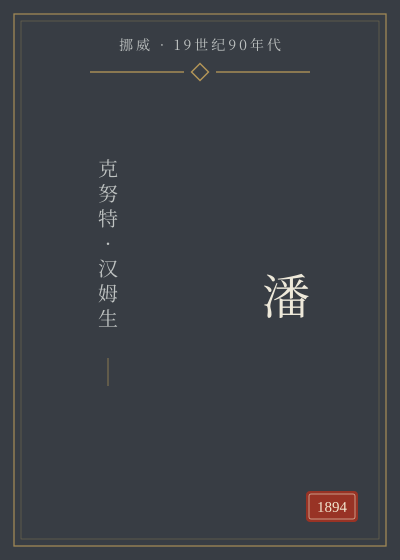
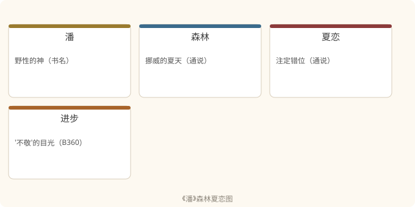

潘
一、基本信息
| 作者 | 克努特·汉姆生 |
|---|---|
| 成书/出版 | 1894年（Britannica B360：Pan (1894)） Knut Hamsun — Encyclopaedia Britannica（百科全书） |
| 国别/地区 | 挪威 |
| 时代 | 近代 · 19世纪90年代 |
| 体裁 | 长篇小说 |
| 语言 | 挪威语 |

《潘》森林夏恋图（主题·结构图）
二、创作背景
Britannica（B360）：Pan——早期作品——'asocial heroes'——'either was indifferent to or took an irreverent view of progress'。
Britannica（B360）：汉姆生——1920诺奖；《饥饿》为其成名作（交叉）。
题材（通说待核）：中尉格拉恩与爱德华在挪威森林的夏恋——'潘'的野性。
三、内容脉络
（通说待核）森林猎人的夏日与商人的女儿。
（通说待核）'潘'的合唱与自然的独白。
四、主要人物表
| 人物 | 身份 | 说明 |
|---|---|---|
| 格拉恩 | 中尉 | （通说待核，B360未载） |
| 爱德华 | 商人女儿 | （通说待核） |
五、主题与艺术特点
- 自然的泛神论（书名语境——通说待核）。
- 'asocial heroes'（B360）。
- 对进步的漠然或不敬（B360）。
六、影响与评论
- Britannica：Pan (1894)（B360）。
Knut Hamsun — Encyclopaedia Britannica（百科全书） - Britannica：1920诺奖（B360 交叉）。
Knut Hamsun — Encyclopaedia Britannica（百科全书）
七、阅读建议
难点
- '潘'的神话语境。
- 抒情与叙事的混合（通说待核）。
- 《潘》中译本（人民文学等——通说待核）。
- 挪威文原版（公有领域）。
汉姆生第二作；与《饥饿》《大地的成长》对读。
八、待核实
- 格拉恩/爱德华人名核对（通说）。
- 1894年出版细节待核。
- '合唱'结构（Chorus of Pan说）待核。